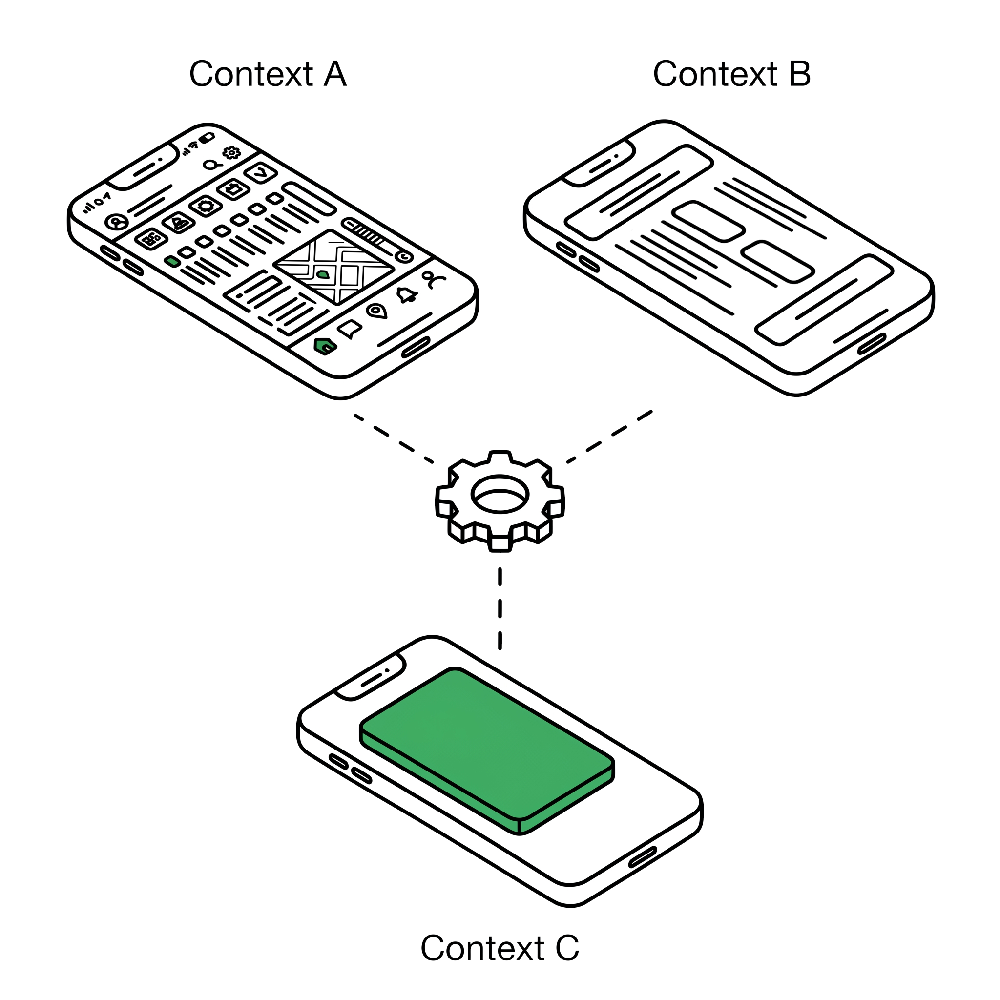
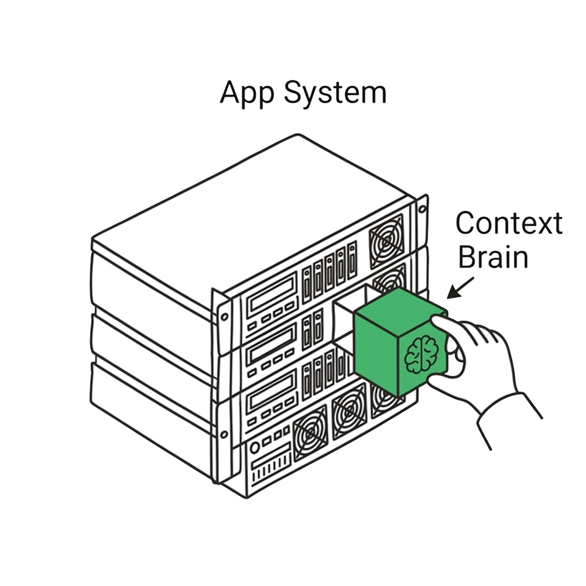

Context Grammar / Specs
The Open Specification
Context Grammar isn't just theory. It's a machine-readable specification. YAML schemas, JSON structures, and design rules — ready for your agent framework, your AI system, your Claude Code workflow.
CC BY 4.0 — Open SpecificationThe Concept
Programming AI with Human Context
AI is smart, but it has no common sense. If you are rushing to the airport, your phone doesn't know. If you are standing in a crowded train, your watch doesn't care.
This specification changes that.
Think of it as an instruction manual you can hand to AI models like ChatGPT, Claude, or any Agent architecture. It teaches them how to read the room, understand cognitive load, and adjust their output dynamically. You don't have to be a developer to use it.

Getting Started
Try it in 2 minutes
You do not need to write code to use the Spec. Download the YAML files below and paste them into your favorite AI chat (Claude / ChatGPT) to instantly upgrade its capabilities.

- Open Claude.ai or ChatGPT.
- Attach the context-tokens-spec.yaml file to the conversation.
- Upload a screenshot of your app screen or describe the user flow.
- Send this prompt:
Review this screen using the Context Grammar spec. Which tokens am I not considering? What breaks when the user is cognitively depleted, in public, or on a small screen? - Read the response. The AI will flag blind spots you didn't design for.
Example AI response: "This checkout flow ignores Cognitive Load. When the user is depleted, 12 payment options create decision paralysis. Reduce to the 3 most-used methods. It also ignores Social Exposure — the order total is displayed in large text, visible to anyone nearby..."

- Attach design-rules.yaml to your AI chat.
- Describe a feature you are building (e.g. "A music player with queue management").
- Send this prompt:
Using the design rules spec, generate 3 UI variations: 1. cognitive_load: high, physical_state: driving 2. social_exposure: public, form_factor: smartwatch 3. cognitive_load: low, autonomy_dial: Suggest For each variation, explain which rules apply and show concrete UI code/changes.
Example AI response: "Variation 1 (driving + high load): Rule R003 applies — collapse queue to a single 'Up Next' track. Remove the share button entirely. Provide voice-only interaction fallbacks..."

- Attach brain-schema.yaml to your AI chat.
- Describe your app and your users (e.g. "A recipe app for busy families with dietary restrictions").
- Send this prompt:
Adapt this brain schema for my recipe app. What should my three memory layers contain? - Identity: what stable facts about each user? - Accumulated: what patterns should it learn over time? - Right Now: what ephemeral state matters for recipes? Also: what would a Disposable Brain look like for a "dinner party" scenario? - Get back a customized data model with concrete fields, types, and lifecycle rules for your domain.
Example AI response: "Identity: allergies per family member, kitchen equipment, cuisine preferences. Accumulated: cooking frequency by day-of-week, substitution history, recipe abandonment patterns. Right Now: pantry state, tonight's time budget, number of diners. Disposable Brain for dinner party: born when user says 'planning a dinner party,' tracks guest constraints and prep timeline, merges patterns back to Accumulated, then dies."
The Downloads
Three Spec Files
Everything an agent needs to understand human context. Eight tokens, a three-layer brain, and design rules — defined as structured data. Download the full files or preview the structure below.

context-tokens-spec.yaml
Token Schema
The 8 tokens with type definitions, value ranges, expected data sources, and system readiness levels.
tokens:
physical_state:
type: enum
values: [stationary, walking, running, driving, resting]
source: [accelerometer, activity_recognition_api]
update_frequency: realtime
cognitive_load:
type: float
range: [0.0, 1.0]
source: [time_of_day, calendar_density, recent_activity]
# See full download for complete attribute definitions and sub-properties...brain-schema.yaml
Brain Schema
The 3-layer memory structure (Identity, Accumulated Learning, Right Now), including the Disposable Brain lifecycle logic.
brain:
layers:
identity:
update_speed: months_to_years
disclosure_controlled: true
fields: [demographics, family, dietary, accessibility]
accumulated_learning:
update_speed: days_to_weeks
# See full download for L3 Right Now and multi-person orchestration logic...design-rules.yaml
Design Rules
33 conditional if/then rules that transform Token states into actual UI design decisions.
rules:
- id: R001
name: cognitive_load_reduction
when:
cognitive_load: "> 0.7"
form_factor: phone
then:
pattern: progressive_disclosure
action: "reduce options to top 3, defer detail"
# See full download for remaining conditional rules...Rule Engine API
33 Behavior Rules
A quick glance at the structural logic contained within the
design-rules.yaml spec, grouped by categories.
| Category | Rules | Direction | Example Pattern |
|---|---|---|---|
| Cognitive Load Mitigation | R001 – R005 | Delegation | Progressive disclosure, Auto-summarize |
| Social Privacy Guard | R006 – R010 | Adaptation | Audience-aware content filtering |
| Trust Calibration | R011 – R015 | Escalation | Approval gate, Dial validation check |
| Device Reflow | R016 – R020 | Adaptation | Form factor optimization matrices |
| Priority Resolution | R021 – R025 | Delegation | Conflict & collision resolution logic |
| Temporal Evolution | R026 – R030 | All | Phase-appropriate onboarding behavior |
| Multi-person Orchestration | R031 – R033 | All | Per-user autonomy conflict handling |